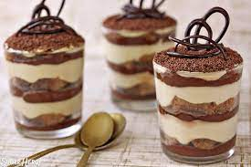

Tasty Tiramisu At Your Service!

Description
This tiramisu recipe shows you how to make the classic Italian layered dessert at home with rum-flavored, coffee-soaked ladyfingers, a creamy mascarpone custard, and whipped cream. The top of this tiramisu is dusted with cocoa powder for an impressive no-bake dessert.
Ingredients
- 6 large egg yolks
- 3/4 cup white sugar
- 2/3 cup milk
- 1 1/4 cups heavy cream
- 1/2 teaspoon vanilla extract
- 1 pound mascarphone cheese, at room temperature
- 1/4 cup string brewed coffee, at room temperature
- 2 tablespoons rum
- 2 packages ladyfinger cookies
- 1 tablespoon unsweetened cocoa powder
Directions
- Step 1
Whisk together egg yolks and sugar in a medium saucepan until well blended. Whisk in milk and cook over medium heat, stirring constantly, until mixture comes to a boil.
- Step 2
Boil gently for 1 minute, then remove from the heat and allow to cool slightly
- Step 3
Cover tightly and chill in the refrigerator for 1 hour.
- Step 4
Beat cream and vanilla in a medium bowl with an electric mixer until stiff peaks form.
- Step 5
Remove egg yolk mixture from the refrigerator; add mascarpone cheese and whisk until smooth.
- Step 6
Combine coffee and rum in a small bowl. Split ladyfingers in half lengthwise and drizzle with the coffee mixture.
- Step 7
Arrange 1/2 of the soaked ladyfingers in the bottom of a 7x11-inch dish. Spread 1/2 of the mascarpone mixture over the ladyfingers, then spread 1/2 of the whipped cream over top. Repeat layers once more. Sprinkle cocoa powder over top
- Step 8
Cover and refrigerate until set, 4 to 6 hours.